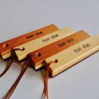
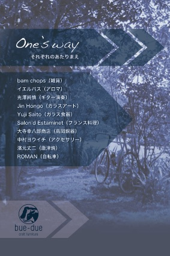
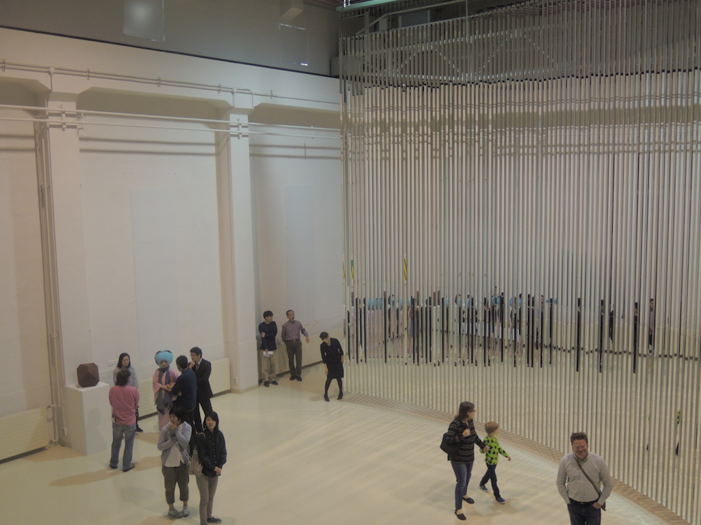
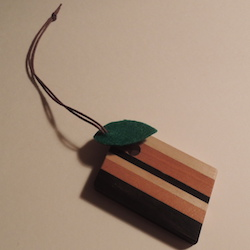
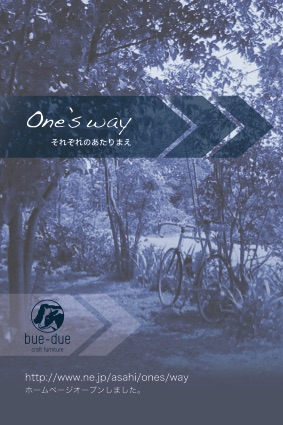
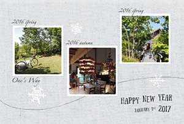

One’s Way–それぞれのあたりまえ–ピンタレストを始めました！
One’s Way–それぞれのあたりまえ–ピンタレストを始めました！
ブログに掲載した写真やこれまでに撮りためた写真からお気に入りを選びピンタレストにアップしました。写真を掲載したブログへのリンクも貼ってあります。よろしければこちらをご覧ください。
写真はピンタレストのトップページです。
タウの木の中村ヨウイチさんの作品を浜松、大阪、奈良でご覧になれます！
今年も残りわずかとなりました。
One's Way- それぞれのあたりまえ -のイベントに協力いただいていたタウの木の中村ヨウイチさんの作品を年内は浜松、大阪、奈良でご覧になれます。
一点もののアクセサリーは、クリスマスプレゼントにピッタリだと思いますよ！
詳しくはタウの木のサイトをご確認ください。
中村ヨウイチさんについては、 recommendをご覧ください。
One’s Way–それぞれのあたりまえ–2017年秋の動画をYouTubeでご覧になれます！
10回目のイベント「One's Way 10th」での光澤さんのギター演奏の動画をYouTubeでご覧になれます。Sakura/1310（いさと）

One’s Way–それぞれのあたりまえ–2017秋が終了しました！
先週末に開催されたOne’s Way–それぞれのあたりまえ–のイベントが無事終了しました。
10回目となるイベントでは、これまでにご協力いただいた全ての作家さんの作品等を展示・鑑賞していただきました。今回のイベントをもちまして、しばらくお休みいたします。充電したのち、新たな形で再開したいと思っています。
イベントの詳細はこちらをご覧ください。
写真は、お越しいただいた方にお渡ししたbue-due製作ウッドストラップです。４種類あったのですか、気づかれましたか？

タウの木の中村ヨウイチさんの作品を東京でご覧になれます！
One's Way- それぞれのあたりまえ -2017秋を開催する11月18日（土）・19日（日）と同日に東京都豊島区雑司が谷にて手創り市が行われます。
その手創り市にタウの木さんが出店されます。お近くにお住いの方、富山までは遠いけれど東京だったら行けそうという方、ぜひ、手創り市へ遊びにいらして下さい。
お優しい風貌の中村ヨウイチさんにお会いできますよ！

One’s Way–それぞれのあたりまえ–2017秋のDMが完成しました！

イベントの詳細はこちらをご覧ください。
アクセスはこちら,お問い合わせはこちらからお願いします。

One’s Way-それぞれのあたりまえ−11月のイベントの概要が決定しました！
次回が10回目の開催となります。10回目を記念してテーマは…
”One’s Way 10th"
bue-dueの家具と木製品のほか、これまでのメモリアルな作品の数々をご覧頂けます。
2017.11.18（土）10:00-18:00
2017.11.19（日）10:00-16:00
お飲み物とお菓子をお楽しみください。
会費：大人500円・小人200円（未就学児無料）
bue-due製作のウッドストラップをお持ち帰りいただけます。
【協力】bam chops（雑貨）・イエルバス（アロマ）・光澤純慎（ギター演奏）・ Jin Hongo（ガラスアート）・Yuji Saito（ガラス食器）・Salon'd Estaminet（フランス料理）・大寺幸八郎商店（高岡銅器）・中村ヨウイチ（アクセサリー）・濱元丈二（唐津焼）・ROMAN（自転車）
みなさまのお越しをお持ちしています！
bue-dueさん他ご協力いただく方々については、 recommendをご覧ください。
ビエンナーレToyama2017-環水公園-いよいよ開幕！
画像をクリックすると拡大します
ビエンナーレTOYAMA2017―環水公園―（第3回展）
2013年・2015年は[太閤山ビエンナーレ]と称して、県民公園太閤山ランドを会場に実施されていました。3回目となる今回は、この夏開館した富山県美術館および富岩運河環水公園での開催となります。
One's Wayが応援している本郷仁さんの作品は第４期（11月5日〜11月17日）に展示されます。
●会期＝2017年9月24日（日）～12月2日（土）
●時間＝9:30～18:00
※1期、2期、3期、4期、5期にわたって作品を展示します。
●会場＝富岩運河環水公園
TADギャラリーおよび「あいの島」周辺
●観覧料＝無料
●主催＝ビエンナーレTOYAMA実行委員会
●共催＝（公財）富山県民福祉公園／富山県美術館／北日本新聞社

ガラス工房○マルの齋藤裕史さんの作品を博多でご覧になれます！
《 ガラス工房〇作品展 》 Ｃｏｌｏｒｆｕｌ ーカラフルー
2017年8月2日（水）～8日（火）
博多阪急 ７階 リビングイベントスペース
会期中は全日、在廊なさるそうです。カラフルなグラスは、食卓を楽しくさせてくれること請け合いです！
詳しくはこちらをご覧ください。
ガラス工房〇マルの齋藤裕史さんについては、
recommendをご覧ください。


タウの木の中村ヨウイチさんの作品を大阪でご覧になれます！
8月1日（月）まで、阪急うめだ本店10階『スークうめだ』中央街区にて
✣✣✣✣✣✣✣✣✣✣✣✣✣✣✣✣✣✣✣✣✣
GLASS×ACCESSORY
李慶子・中村ヨウイチ
「暮らしを華やかに、そして装いは大胆に！」
✣✣✣✣✣✣✣✣✣✣✣✣✣✣✣✣✣✣✣✣✣
李慶子の無色透明の器、中村ヨウイチさんの大ぶりなアクセサリーなどお二人の定番アイテムに加え、今年イチオシの新作が並んでいるそうです。
詳しくはこちらをご覧ください。
中村ヨウイチさんについては、
recommendをご覧ください。
タウの木の中村ヨウイチさんの作品が柏でご覧になれます！
7月24日（月）から7月31日（月）の期間、千葉県柏市の「嘉工房」 企画展に出品されます。初日から中村さんが在廊のことです。
詳しくはこちらをご覧ください。
タウの木 中村ヨウイチさんについては、
recommendをご覧ください。


本郷仁さんの個展、残り１週間となりました！
本郷仁「視線の幾何学・光の修辞学」
JIN HONGO | GEOMETRY OF SIGHT, RHETORIC OF LIGHT.

会期は7月2日（日）までとなっています。
写真は4月16日（日）に開催されたオープニングセレモニー直後の1シーンです。鉄製の直径３mほどの給水管に展示された作品など、昔の発電所という稀有な空間を最大限に活用された展示を楽しむことができます。
再生ボタンをクリックしてください。
詳細は入善町下山芸術の森発電所美術館のサイト をご確認ください。
をご確認ください。
本郷仁さんについては、 recommendをご覧ください。
OZONEインテリアセール2017・SUMMERは15日から開催！
6月15日（水）から20日（火）の期間、OZONEのサマーセールが開催されます。
詳しくはこちらをご覧ください。
リビングデザインセンターOZONEについては、
recommendをご覧ください。

タウの木の中村ヨウイチさんとお父様の親子展が開催されます！
5月31日（水）から6月4日（日）の期間、中村ヨウイチさんのご実家での開催です。
詳しくは,こちらをご覧ください。
タウの木 中村ヨウイチさんについては、
recommendをご覧ください。
One’s Way–それぞれのあたりまえ–2017春の開催、いよいよ次の週末です！

「One’s way セレクション」のテーマで開催のOne’s Way–それぞれのあたりまえ–2017春がこの週末に開催されます。
ノベルティにbue-due製作寄木細工風のウッドストラップを準備しました。葉っぱにはイエルバスさん特製のアロマをつけていただくことができます。今回は庭の花をイメージした香りを準備していただけるとのこと。
手作りのパウンドケーキもご用意します。会費：大人500円・小人200円（未就学児無料）
お気軽に遊びにいらしてください。お待ちしております！
詳細はこちら,アクセスはこちら,お問い合わせはこちらからお願いします。
bue-dueさん、イエルバスさんについては、 recommendをご覧ください。

タウの木さんの作品を滋賀でご覧いただけます！
滋賀県大津市北比良にある『galleryサラ』さんで開催中の「キ・レ・イ SEASON LESS」にタウの木さんが出品されています。
会期／2017年4月22日(土)～5月14日(日)
営業時間／am11：00～pm5：00
定休日／火・水曜日
タウの木の中村ヨウイチさんを含め、21名の作家さんが制作されたファッションアイテムを観ることができるとのことです。
詳しくは『galleryサラ』のサイト をご確認ください。
をご確認ください。
タウの木 中村ヨウイチさんについては、 recommendもご覧ください。
One’s Way–それぞれのあたりまえ–2017春のDMが完成しました！

「One’s way セレクション」
生活雑貨と食品を中心に暮らしの楽しみを紹介します。
2017年
5/20(土)10:00〜18:00・5/21(日)10:00〜16:00
手作りケーキを準備しました。
会費：大人500円・小人200円（未就学児無料）
bue-due製作のウッドストラップをお持ち帰りいただけます。
お気軽に遊びにいらしてください。お待ちしております！
アクセスはこちら,お問い合わせはこちらからお願いします。
bue-dueさんについては、 recommendをご覧ください。
本郷仁さんの個展が４月15日より開催されます！
本郷仁「視線の幾何学・光の修辞学」
JIN HONGO | GEOMETRY OF SIGHT, RHETORIC OF LIGHT.
会期：平成29年4月15日（土曜日）~7月2日（日曜日）となっています。
詳細は入善町下山芸術の森発電所美術館のサイト をご確認ください。
をご確認ください。
なお、4月16日（日）午後2時からオープニングセレモニーが行われるようです。
本郷仁さんについては、 recommendをご覧ください。
ROMANのファーストラン、参加申し込み受付中！
4月16日（日）に開催されます。今年は前年までとは違い、氷見⇔千里浜(片道30km程)のサイクリングとなるそうです。 申込〆切は4月9日（日）です。
詳しくは、ROMANのサイト でご確認ください！
でご確認ください！
なお、ROMANの上野茂さんについては、 recommendをご覧ください。

５月のイベントの概要が決定しました！
One’s Way-それぞれのあたりまえ−
”bue-dueの家具とフェアトレードを中心としたOne’s Way セレクション”をテーマに実施します。 bue-dueの家具でカフェ空間を作り、手作りケーキでお飲み物を楽しんでいただけます。
日時：５月20日（土）10:00〜18:00・21日（日）10:00〜16:00
会費：大人500円 小人200円（未就学児無料）
bue-due製作のノベルティーをお持ち帰りいただけます。
お越しをお持ちしています！
bue-dueさんについては、 recommendをご覧ください。
タウの木さんが大阪タカシマヤに出展されます！
3月8日（水）から14日（火）の期間、大阪タカシマヤに出展されます。
5階中央エスカレーター横：10時〜20時 (金・土曜は20時30分迄)
タウの木 中村ヨウイチさんについては、
recommendをご覧ください。

タウの木さんが京都・百万遍手づくり市に出展されます！
2月15日（水）に京都知恩寺境内で開催される「百万遍さんの手づくり市」に出展されます。
詳しくはこちらをご覧ください。
手作り市.comのウエブサイト
手作り市出店者インフォメーション
また、タウの木 中村ヨウイチさんについては、 recommendをご覧ください。
bue-due さん、「とやまの木せいひん展示会」への出展取りやめ
先にbue-due の中村さんがイオンモール高岡で開催される「とやまの木せいひん展示会」に出展されるとご案内しました。諸事情により、出展取りやめとなりましたので、ご案内いたします。
bue-due さんの県産材を用いた作品は、婦負 (ねい) 森林組合 加工センター フォレストハウス で、ご覧いただけます。
で、ご覧いただけます。
〒939-2314:富山県富山市八尾町城生32
TEL 076-454-7123/FAX 076-454-6850
平日 8:00～17:00営業


タウの木さんの作品を東京でご覧いただけます！
銀座『ギャラリーうとうと』さんで「START UTOUTO 2017」が開催中です。
タウの木の中村ヨウイチさん他、３名の作家さんがご参加とのこと。
会期は、1月30日(月)まで。しかも、会期中全て中村さんがご在廊のことですので、お近くにお住いの方は是非お立ち寄りください。
『ギャラリーうとうと』
中央区銀座2-4-1銀楽ビル9F(8F+1)
タウの木 中村ヨウイチさんについては、 recommendをご覧ください。
bue-due が「とやまの木せいひん展示会」に出展します！
bue-due の中村さんが２月にイオンモール高岡で開催される「とやまの木せいひん展示会」に出展されます。「とやまの木せいひん展示会」は今年で7回目。
昨年の開催情報が、とやまの木せいひん研究会のサイト に掲載されています。
に掲載されています。
One’s Wayのブログについて！
One’s Wayでは、里山での暮らしをブログで発信しています。薪ストーブや家庭菜園のことなど、日常のできごとを綴ります。よろしければブログサイト へも遊びにいらしてください。
へも遊びにいらしてください。
One’s Wayを本年もよろしくお願いいたします。
あけましておめでとうございます。

One’s Wayは今年も、春と秋の２回、イベントを開催いたします。
2013年に初めてイベントを開催してから４年が過ぎ、今年の秋には10回目となります。みなさまとお会いできること楽しみにしています。
One’s WayのWebサイトを公開しました！
年明けと同時にOne’s WayはWebサイトを公開しました。
昨年の秋から年明けの公開を目標に製作しました。お気づきの点などありましたら、問い合わせよりお知らせください。よろしくお願いいたします。